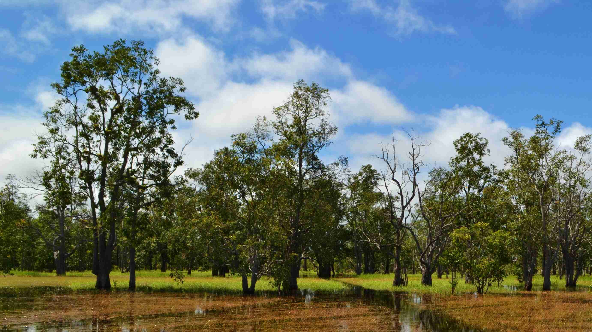

Explore ForestsJelajahi Hutan
Four ecosystems, four stories. From dense lowland canopies to coastal root systems, each forest type carries its own climate role and its own risks.
Empat ekosistem, empat kisah. Dari kanopi dataran rendah yang lebat hingga sistem akar pesisir, setiap jenis hutan memiliki peran iklim dan risikonya sendiri.

Tropical Rainforest
Hutan Hujan Tropis
Home to over half of Indonesia's biodiversity, these dense canopies regulate rainfall across the archipelago.
Rumah bagi lebih dari separuh keanekaragaman hayati Indonesia, kanopi lebat ini mengatur curah hujan di seluruh nusantara.
Read StoryBaca Kisah →
Mangrove Forest
Hutan Mangrove
Indonesia holds the world's largest mangrove area, storing up to five times more carbon than tropical forests.
Indonesia memiliki kawasan mangrove terluas di dunia, menyimpan karbon hingga lima kali lebih banyak dari hutan tropis.
Read StoryBaca Kisah →
Peat Forest
Hutan Gambut
Waterlogged soils lock away ancient carbon, but draining and fire turn these forests into major emission sources.
Tanah yang tergenang menyimpan karbon purba, namun pengeringan dan kebakaran mengubah hutan ini menjadi sumber emisi besar.
Read StoryBaca Kisah →
Mountain Forest
Hutan Pegunungan
Cloud-wrapped slopes feed Indonesia's rivers and shelter species found nowhere else on Earth.
Lereng yang diselimuti awan menjadi sumber air sungai Indonesia dan rumah bagi spesies yang tak ditemukan di tempat lain.
Read StoryBaca Kisah →